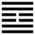

Phong Trạch Trung Phu (中孚 zhōng fú)
Đã định tiết chế thì người trên phải giữ đức tín để người dưới tin theo, cho nên sau quẻ Tiết tới quẻ Trung phu. Trung phu là có đức tin (phu) ở trong (trung) lòng.
Thoán từ:
中孚: 豚魚吉, 利涉大川, 利貞．
Trung phu: Đồn ngư cát, lợi thiệp đại xuyên, lợi trinh.
Dịch: trong lòng có đức tin tới cảm được heo và cá, tốt như vậy thì lội qua sông lớn được, giữ đạo chính thì lợi.
Giảng: quẻ này ở giữa có hai hào âm (hai nét đứt), như trong lòng trống rỗng (hư tâm) không có tư dục, tư ý; còn 4 hào dương là nét liền, đặc, thực (trái với hư), mà hào 2 và hào 5 lại đắc trung (ở giữa nội và ngoại quái), vậy là có đức trung thực. Do đó mà đặt tên quẻ là Trung phu.
Theo nghĩa thì trên là Tốn, thuận với người dưới; dưới là Đoài, phục tòng người trên; như vậy là cảm hoá được dân.
Lòng chí thành cảm được những vật ngu, không biết gì như heo và cá. Lấy lòng chí thành, hư tâm mà ứng phó với nguy hiểm thì vượt được hết, như qua sông lớn mà ngồi chiếc thuyền trống không (hư chu), không chở gì cả, thật là an toàn. Phải giữ chính đạo mới tốt.
Đại Tượng truyện Giảng: gió ở trên, chằm ở dưới, là gió (làm ) động được nước như lòng thành thực cảm động được người. Nên tuy lòng trung thành mà xử việc thiên hạ; như xử tội thì sét đi xét lại, tìm cách cứu tội nhân, tha cho tội chết.
Ý nghĩa các hào:
1.
初九: 虞吉, 有它, 不燕．
Sơ cửu: Ngu cát, hữu tha, bất yến.
Dịch: Hào 1, dương: liệu tính cho chắc chắn rồi mới tin thì tốt; có lòng nghĩ khác thì không yên.
Giảng: Hào này mới vào thời Trung phu, tuy ứng với hào 4, âm nhu, đắc chính là người đáng tin, nhương bước đầu, phải xét cho kỹ lưỡng xem 4 có đáng tin không, khi đã tin rồi thì đừng đổi chí hướng, lòng phải định rồi mới tĩnh mà yên được.
2.
九二: 鶴鳴在陰．其子和之．我有好爵．吾與爾靡之．
Cửu nhị: Minh hạc tại âm, kỳ tử hoạ chi;
Ngã hữu hảo tước, ngô dữ nhĩ mĩ chi.
Dịch: Hào 2, dương: Như con hạc mẹ gáy ở bóng râm, con con nó hoạ lại; lại như tôi có chén rượu ngon, tôi cùng anh chia nhau.
Giảng: Hào này ứng với hào 5 ở trên, cả hai đều có đức dương cương, lại đắc trung đều có lòng thành thực, đều là những hào quan trọng trong quẻ Trung phu; hai bên cảm ứng, tương đắc với nhau như hạc mẹ gáy mà hạc con hoạ lại, hoặc như một người có chén rượu ngon mà chia với bạn.
Theo Hệ từ thượng truyện, Chương VIII, số 5, Khổng tử giải thích ý nghĩa hào này như sau:
“Người quân tử ở trong nhà mà nói ra, nếu lời nói hay thì người ngoài nghìn dặm cũng hưởng ứng, huống chi là người ở gần;.. hành vi từ gần phát ra thì ảnh hưởng hiện ngay ở xa.. như vậy chẳng nên thận trọng lắm ư?”
Khổng tử đã hiểu rộng “tiếng gáy của con hạc” là lời nói hay; và “chén rượu ngon’ là hành vi đẹp, mà khuyên chúng ta phải thận trọng về ngôn, hành.
3.
六三: 得敵, 成鼓, 或罷, 或泣, 或歌．
Lục tam: Đắc dịch, hoặc cổ, hoặc bãi, hoặc khấp, hoặc ca.
Dịch: Hào 3, âm: gặp được bạn (địch) lúc thì đánh trống vui múa, lúc thì chán nản mà ngừng, lúc thì khóc, lúc thì hát.
Giảng: Hào này âm nhu bất chính, bất trung, ứng với hào ở trên cùng, dương cương mà bất trung, bất chính, như hai người ăn ở với nhau mà không thành thực, tính tình thay đổi luôn luôn, vui đó rồi khóc đó “Hoặc cổ hoặc bãi”, (có người hiểu là: lúc thì cổ võ, lúc thì bỏ đi).
4.
六四: 月幾望, 馬匹亡, 无咎．
Lục tứ: Nguyệt cơ vọng, mã thất vong, vô cữu.
Dịch: Hào 4, âm: Trăng mười bốn (gần tới rằm), con người bỏ bạn mà tiến lên, không lỗi.
Giảng: Hào này đắc chính, thân cận với hào 5, được vua tín nhiệm sự thịnh vượng đã gần tới tuyệt đỉnh rồi, như trăng mười bốn gần đến ngày rằm. Nó ứng với hào 1, hai bên cặp kè nhau như cặp ngựa, nhưng nó biết phục tòng đạo lý, nên sau bỏ 1, để chuyên nhất với 5, như vậy không có tội lỗi gì.
5.
九五: 有孚攣如, 无咎．
Cửu ngũ: Hữu phu luyến như, vô cữu.
Dịch: Hào 5, dương: có lòng chí thành ràng buộc, không lỗi.
Giảng: Như trên đã nói, hào này ở ngôi chí tôn, có đủ đức trung chính, thành tín buộc được lòng thiên hạ.
6.
上九: 翰音登于天, 貞凶．
Thượng cửu: Hàn âm đăng vu thiên, trinh hung.
Dịch: Hào trên cùng, dương: tiếng gà lên tận trời, dù có chính đáng cũng xấu.
Giảng: Hào này dương cương, không đắc trung lại ở vào thời thành tín đã cùng cực, đức tin đã suy, vậy là có danh mà không có thực. Lại thêm không biết biến thông, muốn cố giữ đức tín (vì có tính dương cương, cho nên ví với con gà không là loài bay cao được mà muốn lên tới trời.
Vậy lòng thành tín vẫn là tốt, nhưng phải đừng thái quá mà biết biến thông, Phan Bội Châu nhắc truyện ngụ ngôn anh chàng họ Vĩ (có sách nói là họ Vi) thời Xuân Thu hẹn với một người con gái ở dưới cầu; người đó không tới, nước lên cao, anh ta cứ ôm cột cầu chịu chêt. Tín như vậy là ngu, không biết biến thông.